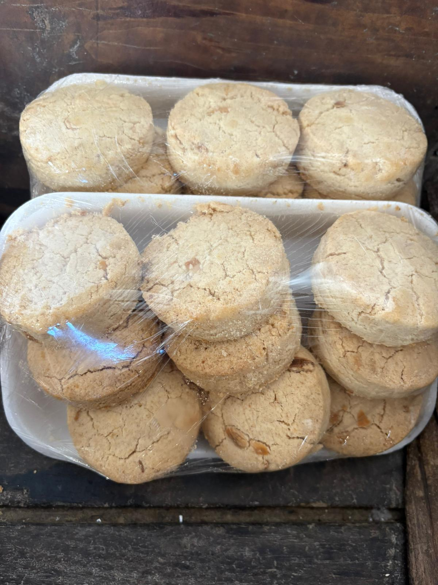
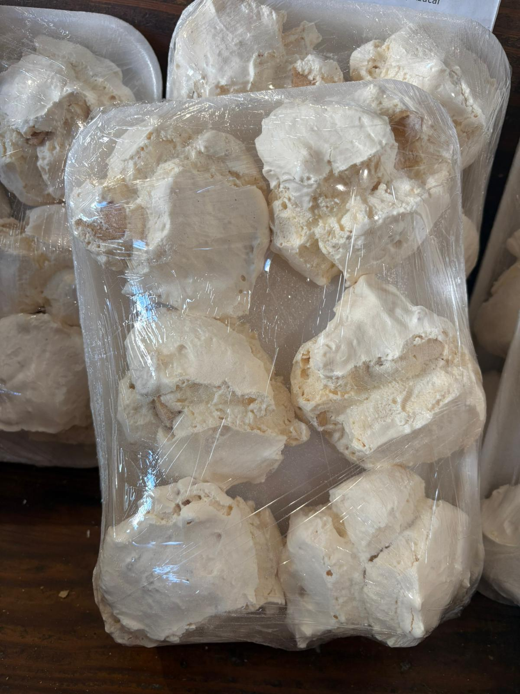

Pan de Hogaza
El pan de siempre, el que nunca falta en la mesa. Corteza recia y miga generosa, horneado con el ritual de cada mañana.

— Panadería Rural Artesanal —
Tradición y Calidez en cada bocado
Explorar Nuestros ProductosDesde que era niña, he amasado el pan como se hacía siempre: con tiempo, con manos y con amor.
El Horno Artesano de Luisa nació en el corazón de Sierra Nevada, donde el silencio de la madrugada solo lo rompe el crujir de la leña en el horno de piedra. Desde hace más de cuarenta años, Luisa elabora cada pieza a mano, siguiendo recetas que han pasado de generación en generación sin escribirse jamás en ningún papel.
Aquí no hay prisas. La masa fermenta a su propio ritmo, los panes se hornean cuando están listos, y cada bocado cuenta una historia de tierra, de esfuerzo y de cariño. Porque el buen pan no se improvisa: se hereda.
✦ Pan de pueblo, hecho con alma ✦
Horneamos con las primeras luces del día para que el pan llegue caliente a tu mesa cada mañana.
El pan de siempre, el que nunca falta en la mesa. Corteza recia y miga generosa, horneado con el ritual de cada mañana.

Para quienes prefieren el pan más honesto, el que sabe a campo y a tierra. De sabor profundo y nutritivo de verdad.

Mismo cariño que la hogaza grande, en el tamaño justo para el día a día. Ideal para disfrutar sin que sobre nada.

Crujiente al partir, tierna al morder. Sale del horno con las primeras luces y llega caliente a tu mesa.

Suaves, esponjosas y con ese aroma que te lleva a la infancia. Perfectas para empezar el día con buen sabor.

Hechas a mano una a una, con la paciencia que solo da el amor por lo bien hecho. Delicadas y aromáticas.

Pequeños bocados de textura única que desaparecen en cuanto se ponen en la mesa. Un clásico que nunca falla.

Dulce de fiesta, de esos que se hacen con tiempo y se disfrutan despacio. Tradición que sabe igual que siempre.

Ligeros como su nombre, crujientes y delicados. Un dulce de otro tiempo que sigue enamorando.
Barranco De Poqueira, 2
Capileira, 18413
Granada
Lunes a Domingo: 9:00h – 14:00h
Cerrado los Jueves
"El pan se hornea de madrugada para que llegue caliente a tu mesa"